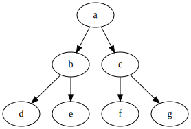
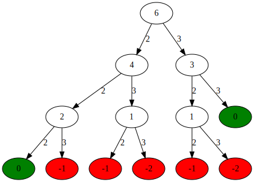
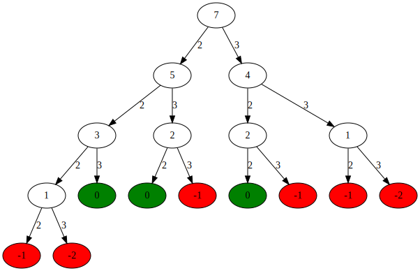
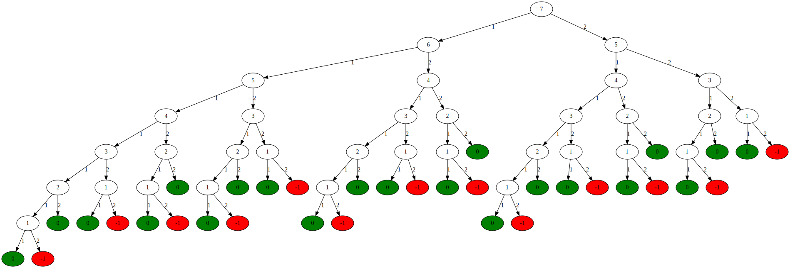
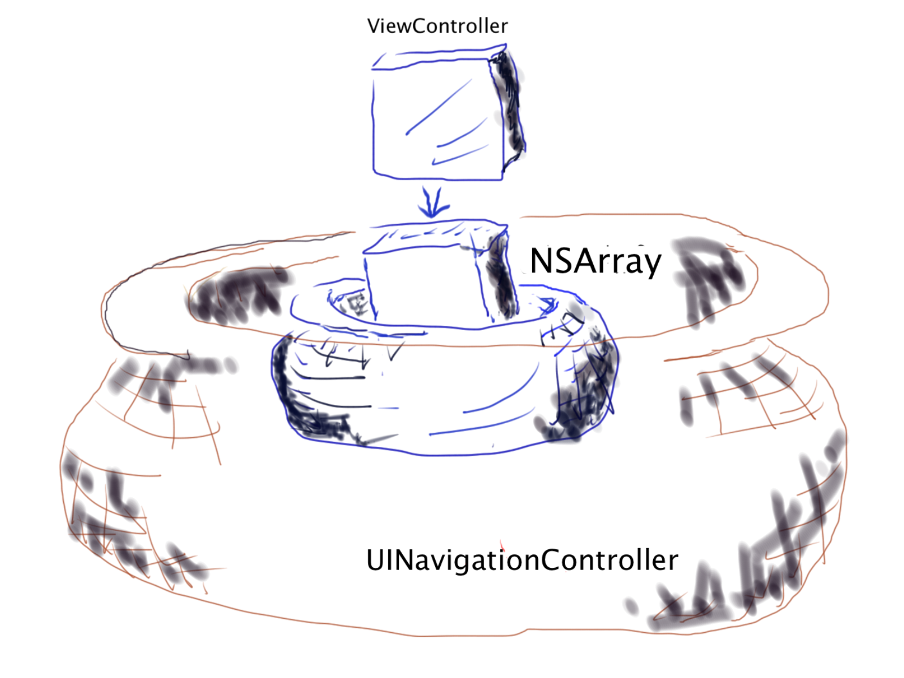
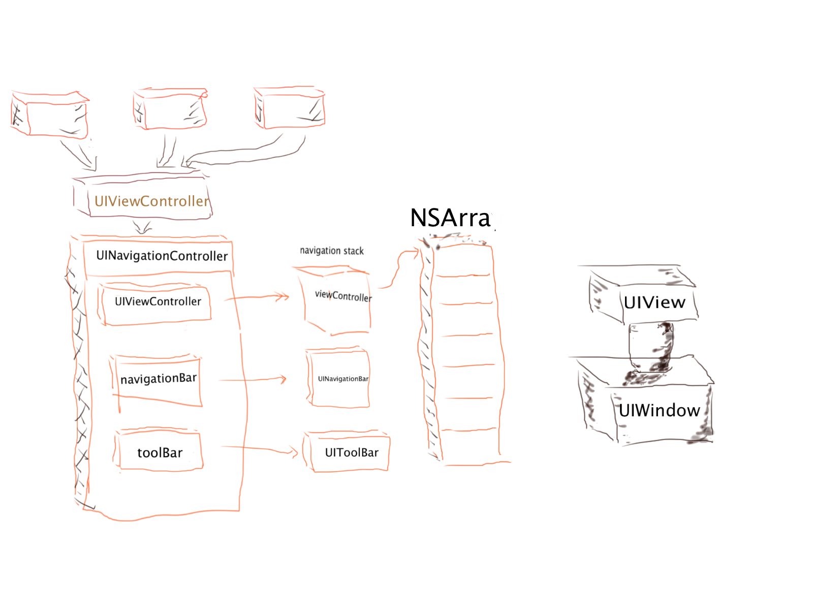
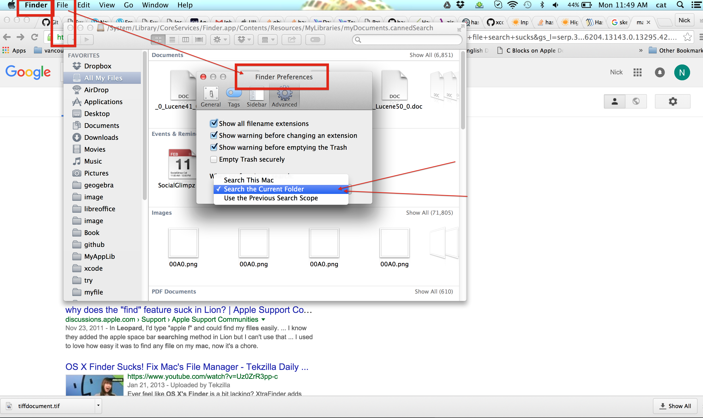
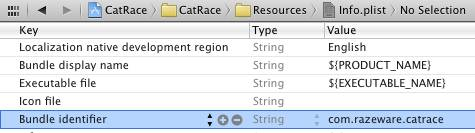
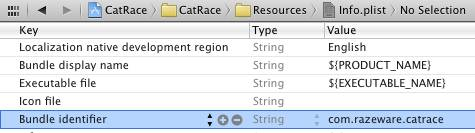
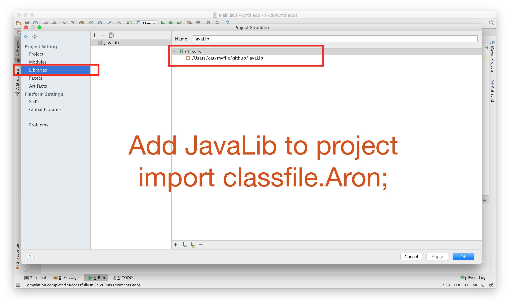

$\langle {\large{\color{red}\zeta}} \rangle$
Wed Sep 1 02:44:14 PDT 2015
woke up pretty early this moring around 9:30am, that weather is hot but it is ok as long as you are in the shadow.
I brushed my teeth and washed my face quickly. I drove down to Santa Clara library, it only took me ten mintues to get there.
There are still a few empty parking spot in the parking lot
Santa Clara library is bright, spacing and quiet. There is lots power plugs around the library so it could save your life if you are constantly running out of juice on your laptop.
Get the lunch around 1:30 in Safe Way, same kind of sandwich which is I usually order.
I'm pretty tired of same kind of lunch every day almost, sometimes I just did not eat any big real lunch any more,
I just get some apple or banana and milk,
Update my latex stuff, add Ring homomorphrism definitin, Coset definition, some example homomorphrism map,
e.g. conjugate map, or $f(x) = f(x + 1)$ are all homomorphrisms
The definitin of homomorphrism is pretty confusing initially, but once you have your example on yor mind, then it is very "simple" concept.
Continue to add feature to the SimpleGame.
Three numbers have to be horizonal, vertical or diagonal on the 2D grid.
The constraint is similar to Sudoku, but only three numbers instead of nine numbers
I miss one corner case which is two numbes on the same row and col, it took me a while to debug that corner case
$\langle {\large{\color{red}\alpha}} \rangle$ Wed Sep 2 11:32:25 PDT 2015
I worke up a little bit late this morning, it is around 11am. The weather is not hot but the sun is strong so you still feel hot
when you are not in the shadow.
Once again, I drove down to the Santa Clara library and sit on the same table nearby the window.
I like to site on the table because it is the brightest spot you can find in the library.
I try to review some algorithms, and the first one was coming to my mind is the permutation of an array problem.
This is not easy question during the interview if you never or don't understand the algorithm well. But the algorithm is very short,
it contains only around less than 10 lines.[depend on how you write it] Initially, I try to figure out whether I can come out the algorithm without any review, I did some draw on the paper and wrote a few characters,
and wrote down the permutation of a few characters, eventually I can rewrite the algorithm.
The algorithm is similar to print out the upper triangle of two dimension array, usually we can use two loops and iterate horizontally and vertically
but we can use recursion to replace one dimension and use only one loop.
woke up pretty early this moring around 9:30am, that weather is hot but it is ok as long as you are in the shadow.
I brushed my teeth and washed my face quickly. I drove down to Santa Clara library, it only took me ten mintues to get there.
There are still a few empty parking spot in the parking lot
Santa Clara library is bright, spacing and quiet. There is lots power plugs around the library so it could save your life if you are constantly running out of juice on your laptop.
Get the lunch around 1:30 in Safe Way, same kind of sandwich which is I usually order.
I'm pretty tired of same kind of lunch every day almost, sometimes I just did not eat any big real lunch any more,
I just get some apple or banana and milk,
Update my latex stuff, add Ring homomorphrism definitin, Coset definition, some example homomorphrism map,
e.g. conjugate map, or $f(x) = f(x + 1)$ are all homomorphrisms
The definitin of homomorphrism is pretty confusing initially, but once you have your example on yor mind, then it is very "simple" concept.
Continue to add feature to the SimpleGame.
Three numbers have to be horizonal, vertical or diagonal on the 2D grid.
The constraint is similar to Sudoku, but only three numbers instead of nine numbers
I miss one corner case which is two numbes on the same row and col, it took me a while to debug that corner case
$\langle {\large{\color{red}\alpha}} \rangle$ Wed Sep 2 11:32:25 PDT 2015
I worke up a little bit late this morning, it is around 11am. The weather is not hot but the sun is strong so you still feel hot
when you are not in the shadow.
Once again, I drove down to the Santa Clara library and sit on the same table nearby the window.
I like to site on the table because it is the brightest spot you can find in the library.
I try to review some algorithms, and the first one was coming to my mind is the permutation of an array problem.
This is not easy question during the interview if you never or don't understand the algorithm well. But the algorithm is very short,
it contains only around less than 10 lines.[depend on how you write it] Initially, I try to figure out whether I can come out the algorithm without any review, I did some draw on the paper and wrote a few characters,
and wrote down the permutation of a few characters, eventually I can rewrite the algorithm.
The algorithm is similar to print out the upper triangle of two dimension array, usually we can use two loops and iterate horizontally and vertically
but we can use recursion to replace one dimension and use only one loop.
printUpperTriangle()
{
for(int col = 0; col < array.length; col++)
{
for(int row = col; row < array.lenght; row++)
{
print(array[col][row];
}
}
}
//Output an upper triangle
but we can use recursion to replace one loop!
printUpperTriangle(int col)
{
for(int row = col; row < array.length; row++)
{
printUpperTriangle(col + 1);
print(array[col][row]);
}
}
Obviously, their output are different, but if we remove all the duplicated elements
from the recursive one, then we can get same upper triangle,[the orders are different]
Around 1pm, I went to get some lunch. The food is terrible in San Jose so I just get a donus, an apple and a milk.
After lunch, I come back to library, and continue to study some algorithms.
$\langle {\large{\color{red}\sigma}} \rangle$ Fri Sep 3 11:43:11 PDT 2015
Last night, I played around with PDF.jS which is JavaScript library to render PDF on browser.
PDF.js is written in CSS, HTML5 and JavaScript, it looks pretty cool tool if you want to render PDF file on brower.
PDF.js depends on node.js so you need to install node.js on your matchine. Currently Chrome can render PDF file natively,
but not Safari or IE. I don't see any compelling reason to use JavaScript to render PDF file since Mathjax is pertty good and popular library to render mathematic formulas.
Sun Sep 6 05:04:21 PDT 2015
Forgot write some note in the last couple days. Today is pretty quiet on the street, I think it is holiday here.
There is not many people on the Korean Caffee, and the steeet is empty. This is the typical Labour Holiday scene.
Last night, there is police check point close the Korean town in El Camino Real.
This is first time I was stoped by the police in CA and they ask for your driver license
I think they try to do some stuff to show the public they are doing drive public safe measure
$\langle {\large{\color{red}\mu}} \rangle$ Tue Sep 7 17:50:42 PDT 2015 Yesterday, I spent most of my time on reviewing algorithms.
I went through quick sort, merge sort and review the algorithm to find the clusters in 2D array
Also, review the reverse the single linked list. I found the single linked list is not easy question actually,
it is easy to make mistaken when you switch two links in two nodes, since you might forget the next link is overwritten
when two links are switched. For quick sort, the algorithm is not hard but the hard part is when you partition the array with privot onlineb, Fortunately, the partition algorithm is very short/simple but it is not obvious.
After lunch, I come back to library, and continue to study some algorithms.
$\langle {\large{\color{red}\sigma}} \rangle$ Fri Sep 3 11:43:11 PDT 2015
Last night, I played around with PDF.jS which is JavaScript library to render PDF on browser.
PDF.js is written in CSS, HTML5 and JavaScript, it looks pretty cool tool if you want to render PDF file on brower.
PDF.js depends on node.js so you need to install node.js on your matchine. Currently Chrome can render PDF file natively,
but not Safari or IE. I don't see any compelling reason to use JavaScript to render PDF file since Mathjax is pertty good and popular library to render mathematic formulas.
Sun Sep 6 05:04:21 PDT 2015
Forgot write some note in the last couple days. Today is pretty quiet on the street, I think it is holiday here.
There is not many people on the Korean Caffee, and the steeet is empty. This is the typical Labour Holiday scene.
Last night, there is police check point close the Korean town in El Camino Real.
This is first time I was stoped by the police in CA and they ask for your driver license
I think they try to do some stuff to show the public they are doing drive public safe measure
$\langle {\large{\color{red}\mu}} \rangle$ Tue Sep 7 17:50:42 PDT 2015 Yesterday, I spent most of my time on reviewing algorithms.
I went through quick sort, merge sort and review the algorithm to find the clusters in 2D array
Also, review the reverse the single linked list. I found the single linked list is not easy question actually,
it is easy to make mistaken when you switch two links in two nodes, since you might forget the next link is overwritten
when two links are switched. For quick sort, the algorithm is not hard but the hard part is when you partition the array with privot onlineb, Fortunately, the partition algorithm is very short/simple but it is not obvious.
e.g. choose the first element of an array as pivot
int[] array = {2, 4, 1, 3}
int pivot = array[0];
int lo = 0;
int big = 0;
for(int i=0; i < array.length; i++)
{
if(array[i] < pivot)
{
swap(array, i, big);
big++;
}
}
swap(array, lo, big-1),
The algorithm is very short but it is not obvious[at least for me]
$\langle {\large{\color{red}\xi}} \rangle$
Sat Sep 12 00:35:25 PDT 2015
In this couple days, I spend some time on two dimension drawing in iOS. There are a lots of stuff to read and digest[break down]
Learn some new stuff. drawing coordinates, view coordinates and hardware coordinates
The center[0, 0] of drawing coordinates is on the center of screen, this is my first time I hear the term "drawing coordiates".
Previously we heard view coordinates and the [0, 0] is usually on Up Left corner of rectangle. Also there is hardware coordinates, and
we usually don't deal with hardware coordinates, the [0, 0] is also on the Up Left corder of a rectangle, but it is different from
the view coordinates[from Apple Doc]
1. Drawing Coordinates is used when the drawing commands are applied
2. View Coordinates is fixed coordinate system relative to the view
3. Hardware Coordinates is the coordinate system represents pixels on the physical screen
Also, there is something called default coordinate system which maps onto view's underlying coordinate system when the graphic contexts establishs the initial drawing coordinate system.

In this couple days, I spend some time on two dimension drawing in iOS. There are a lots of stuff to read and digest[break down]
Learn some new stuff. drawing coordinates, view coordinates and hardware coordinates
The center[0, 0] of drawing coordinates is on the center of screen, this is my first time I hear the term "drawing coordiates".
Previously we heard view coordinates and the [0, 0] is usually on Up Left corner of rectangle. Also there is hardware coordinates, and
we usually don't deal with hardware coordinates, the [0, 0] is also on the Up Left corder of a rectangle, but it is different from
the view coordinates[from Apple Doc]
1. Drawing Coordinates is used when the drawing commands are applied
2. View Coordinates is fixed coordinate system relative to the view
3. Hardware Coordinates is the coordinate system represents pixels on the physical screen
Also, there is something called default coordinate system which maps onto view's underlying coordinate system when the graphic contexts establishs the initial drawing coordinate system.
Sun Sep 13 14:22:57 PDT 2015
I'm working on some simple library which is moving the block around the screen.
There are a few operations that I would like to implement.
1. translation
2. rotation
3. reflection.[vertical, horizonal and diagonal]
4. flip
5. cycle
when I play around with array indexes, there are some interested properties between the index of array and the value of array.
In group theory, permutation group is well known. There is obvious question is how the permutation group and array are related
I'm working on some simple library which is moving the block around the screen.
There are a few operations that I would like to implement.
1. translation
2. rotation
3. reflection.[vertical, horizonal and diagonal]
4. flip
5. cycle
when I play around with array indexes, there are some interested properties between the index of array and the value of array.
In group theory, permutation group is well known. There is obvious question is how the permutation group and array are related
Given C['a', 'b', 'c', 'd']
A[ 3, 1, 0, 2]
B[ 0, 3, 2, 1]
map:[0, 1, 2, 3] to [3, 1, 0, 2]
Map C with the order in A
[0->3]->'d'->0
[1->1]->'b'->1
[2->0]->'a'->2
[3->2]->'c'->3
for( i = 0; i< len; i++)
D[i] = C[A[i]]
Composite two maps
0->3->2
1->1->1
2->0->3
3->2->0
for( i = 0; i< len; i++)
A[A[i]]
Composition three maps becomes Identity map
0->3->2->0
1->1->1->1
2->0->3->2
3->2->0->3
for( i = 0; i< len; i++)
A[A[A[i]]]
for( i = 0; i< len; i++)
A[B[i]]
Fri Oct 2 12:08:51 PDT 2015
Last night, I spent some times on the Play Framework in Scala.
I download it from typesafe and install it, it is pretty smooth.
And I followed Youtube tutorial to get myself start it.
The Youtube tutorial is extremely clear.
I have no Scala experience but I can follow it.
The tutorial teachs:
How to setup The Play Framework in Scana.
How to Run the Hello World in Play Framework.
How to use Intellij to load your Play Framwork project.
How to use template on your Project.
How to create your Models and Controller.
How to link your Models/View/Controllers with your template
The catch is you will get compile error when you just follow the tutorial.
"type Application is not a member of package controllers"
The reason for that is Play 2.4 generate default dependency injected router.
unlike previously, when it used a static router.
You have to options:
1. Remove the routeGenerator from build.sbt so play will generate a static router.
2. Make your controller classes instead of objects, and use dependency injection.
Sun Oct 4 17:41:01 PDT 2015
Update about the Play Framework in Scala
I spend some times on following the Youtube tutorial Play Framwork in Scala, The tutorial is fanstic and recommand everyone should watch the video if you are new to Play Framework in Scala. Unfortunately, I missed some steps on from the tutorial that causes me many hours to debug my code. The error was I use POST instead of GET on routes file, consequently[as a result, therefore] getPersons method can't be called from controller Uploading file is working so far[need full file path on the server, otherwise, new file can't be created]
Sat Dec 5 03:00:24 PST 2015
The Play Framework:
Current Project in github/scala/PlayExample, the project can be opened from Intellij
Run the project:
Goto PlayExample and ./activator run [it will open port xfido.com port:9000]
Last night, I spent some times on the Play Framework in Scala.
I download it from typesafe and install it, it is pretty smooth.
And I followed Youtube tutorial to get myself start it.
The Youtube tutorial is extremely clear.
I have no Scala experience but I can follow it.
The tutorial teachs:
How to setup The Play Framework in Scana.
How to Run the Hello World in Play Framework.
How to use Intellij to load your Play Framwork project.
How to use template on your Project.
How to create your Models and Controller.
How to link your Models/View/Controllers with your template
The catch is you will get compile error when you just follow the tutorial.
"type Application is not a member of package controllers"
The reason for that is Play 2.4 generate default dependency injected router.
unlike previously, when it used a static router.
You have to options:
1. Remove the routeGenerator from build.sbt so play will generate a static router.
2. Make your controller classes instead of objects, and use dependency injection.
Sun Oct 4 17:41:01 PDT 2015
Update about the Play Framework in Scala
I spend some times on following the Youtube tutorial Play Framwork in Scala, The tutorial is fanstic and recommand everyone should watch the video if you are new to Play Framework in Scala. Unfortunately, I missed some steps on from the tutorial that causes me many hours to debug my code. The error was I use POST instead of GET on routes file, consequently[as a result, therefore] getPersons method can't be called from controller Uploading file is working so far[need full file path on the server, otherwise, new file can't be created]
Sat Dec 5 03:00:24 PST 2015
The Play Framework:
Current Project in github/scala/PlayExample, the project can be opened from Intellij
Run the project:
Goto PlayExample and ./activator run [it will open port xfido.com port:9000]
Sun Oct 4 15:04:36 PDT 2015
The power of swap operation
permutation
merge sort
quick sort
merge two sorted lists
generate N unique random numbers
The power of swap operation
permutation
merge sort
quick sort
merge two sorted lists
generate N unique random numbers
XOR is pretty awesome operation in Computer Science
Swap two variables without a tmp variable
int a = 2
int b = 3
int tmp = a; a = b; b = tmp;
XOR algorithm
int a = 0x010
int b = 0x011
a = a ^ b // 0x001 = 0x010 ^ 0x011
b = a ^ b // 0x010 = 0x001 ^ 0x011
a = a ^ b // 0x010 = 0x001 ^ 0x010
No XOR
one = 1
two = 2
one = one + two
two = one - two = 1
one = one - two = 2
XOR Trick, check power of two
Check whether a number is power of two
int num = 10 = 0x1010;
int nuu = 10-1 0x1001
num XOR nuu = 0x1010 ^ 0x1001 != 0
num is not power of two
XOR Trick, flip bit
int flipbit = 0x1010 ^ 0x1111 = 0x0101
int recover = 0x0101 ^ 0x1111 = 0x1010
Wed Oct 7 16:52:27 PDT 2015
Play around with Scala today, it is pretty "nice" language.
Scala is one of the most pop functional programming out there.
Sat Oct 10 14:59:17 PDT 2015
Play Framework update:
I just found out I make a stupid mistaken on the code, I forgot to register my class from Sorm Instance
and I got "Entity 'entity name' is not registered" error message.
What is working so far for the Play Framework in Scala:
1. Post data to database
2. Query data from database
3. Upload file to server
Play around with Scala today, it is pretty "nice" language.
Scala is one of the most pop functional programming out there.
Sat Oct 10 14:59:17 PDT 2015
Play Framework update:
I just found out I make a stupid mistaken on the code, I forgot to register my class from Sorm Instance
and I got "Entity 'entity name' is not registered" error message.
What is working so far for the Play Framework in Scala:
1. Post data to database
2. Query data from database
3. Upload file to server
Thu Oct 22 23:23:06 PDT 2015
Install Tomcat7 on my Mac today,
Here is how to use HomeBrew
brew install tomcat
Install Tomcat7 on my Mac today,
Here is how to use HomeBrew
brew install tomcat
Sat Oct 24 13:18:21 PDT 2015
Fix bug on Coin Change Algorithm and clarify some tricky issues
Finally, add dynamic programming solution for Coin Change Algorithm, there is no step by step tutorial yet.
Fix bug on Coin Change Algorithm and clarify some tricky issues
Finally, add dynamic programming solution for Coin Change Algorithm, there is no step by step tutorial yet.
Mon Oct 26 00:08:01 PDT 2015
Today, I use GraphiViz to generate the graph for [Coin Change Problem]
GraphViz is very powerful tool to generate all sorts of graphs.
For example, the nodes of the graph can be different chape such as circle, ellipse and rectangle, etc.
You can use different colors on node and edge.
GraphViz use DOT file format which is a simple way of describing graphs that boths humans and computer programs can use.
Today, I use GraphiViz to generate the graph for [Coin Change Problem]
GraphViz is very powerful tool to generate all sorts of graphs.
For example, the nodes of the graph can be different chape such as circle, ellipse and rectangle, etc.
You can use different colors on node and edge.
GraphViz use DOT file format which is a simple way of describing graphs that boths humans and computer programs can use.
digraph G{
a->b
a->c
b->d
b->e
c->f
c->g
}

coin{2, 3}, s = 6

coin{2, 3}, s = 7

coin{1, 2}, s = 7

Mon Nov 2 21:09:24 PST 2015
In Tomcat 8.0.x, there is no user for the [Manager App], you need to manually add user and role to the tomcat-user.xml under conf directory.
In Tomcat 8.0.x, there is no user for the [Manager App], you need to manually add user and role to the tomcat-user.xml under conf directory.
role rolename="admin"
role rolename="admin-gui"
role rolename="manager"
role rolename="manager-gui"
user username="tomcat" password="password" roles="admin,admin-gui,manager,manager-gui"
Make sure you add [admin], [admin-gui], [manager], [manager-gui], all of them.
Please don't ask me what are the difference among of them.
Apache Nutch is web crawler, website scraper tool.
Install Apache Nutch [current version 2.3] on Mac OSX 10.9.5
1. Download Apache Nutch and untar it
2. cd to your Apache Nutch directory [my current version is apache-nutch-2.3]
3. type: ant runtime [ant is the build tool like Maven. Install it if you don't have ant]
4. runtime directory is generated under your current directory
5. type: [path]apache-nutch-2.3/runtime/local/bin/nutch and you will see some output from your terminal.
6. config file: apache-nutch-2.3/nutch-site.xml
7. Mac OS: export JAVA_HOME=/Library/Java/JavaVirtualMachines/jdk1.8.0_45.jdk/Contents/Home/
Apache Solr is indexer tool
Install Apache Nutch [current version 5.3.1] on Mac OSX 10.9.5
1. download Apache Solr [You can just download the binary version solr-5.3.1.zip]
2. unzip solr-5.3.1.zip
3. cd solr-5.3.1/
4. run: bin/solr start -e cloud -noprompt
5. you can see the Solr is running by loading Admin UI in your web browser: http://xfido.com:8983/solr/
6. this is the main start point for administering Solr.
Please don't ask me what are the difference among of them.
Apache Nutch is web crawler, website scraper tool.
Install Apache Nutch [current version 2.3] on Mac OSX 10.9.5
1. Download Apache Nutch and untar it
2. cd to your Apache Nutch directory [my current version is apache-nutch-2.3]
3. type: ant runtime [ant is the build tool like Maven. Install it if you don't have ant]
4. runtime directory is generated under your current directory
5. type: [path]apache-nutch-2.3/runtime/local/bin/nutch and you will see some output from your terminal.
6. config file: apache-nutch-2.3/nutch-site.xml
7. Mac OS: export JAVA_HOME=/Library/Java/JavaVirtualMachines/jdk1.8.0_45.jdk/Contents/Home/
Apache Solr is indexer tool
Install Apache Nutch [current version 5.3.1] on Mac OSX 10.9.5
1. download Apache Solr [You can just download the binary version solr-5.3.1.zip]
2. unzip solr-5.3.1.zip
3. cd solr-5.3.1/
4. run: bin/solr start -e cloud -noprompt
5. you can see the Solr is running by loading Admin UI in your web browser: http://xfido.com:8983/solr/
6. this is the main start point for administering Solr.
Mon Nov 23 15:08:08 PST 2015
Import car from U.S to Canada.
When you import a car from U.S to Canada, you need to get recall-clearance letter from your car manufactory.
Title, Receipt, and Manu
Call the Volkswagen today, and found out my car has recall issue.
Call the Volkswagen dealer and make an appointment to fix the mess tomorrow
She told me it takes around two hours to fix the issue.Well, I expect it will take four hours to fix the mess.
you never trust what the dealer guys tell you.
Import car from U.S to Canada.
When you import a car from U.S to Canada, you need to get recall-clearance letter from your car manufactory.
Title, Receipt, and Manu
Call the Volkswagen today, and found out my car has recall issue.
Call the Volkswagen dealer and make an appointment to fix the mess tomorrow
She told me it takes around two hours to fix the issue.Well, I expect it will take four hours to fix the mess.
you never trust what the dealer guys tell you.
Declare pointer of UIColor* in ObjecitiveC:
Wrong:
UIColor** arrayPt = malloc(num*sizeof(UIColor*));
Right:
UIColor*__strong* arrayPt = malloc(num*sizeof(UIColor*));
Fri Dec 18 11:39:43 PST 2015
Add ViewController to navigationController in iOS
Add ViewController to navigationController in iOS
0. Assume you implement UIApplicationDelegate
1. MyViewController* viewController = [[MyViewController alloc]init];
2. UINavigationController* navController = [UINavigationController alloc]
initWithRootViewController:viewController];
3. [self.window addSubview:[navController view]];

How to get rid of the warning message in iOS:
[Application windows are expected to have a root view controller at the end of application launch]
The following two methods are important
[1] self.navigationController = [[UINavigationController alloc]initWithRootViewController:viewController];
- According to Apple Doc. The method push the Root View Controller without animation
[2] [self.window setRootViewController:viewController];
- Set the View Controller as Root View[The View Controller is at [0] in Navigation Stack]
If you use the [1] then you can't get rid of the warnning message[I always though the two methods are the same before]
- The name of methods are confusing in iOS API sometimes
[solution]
You have to use [2] to set the RootViewController to get rid of the warnning message
[Application windows are expected to have a root view controller at the end of application launch]
The following two methods are important
[1] self.navigationController = [[UINavigationController alloc]initWithRootViewController:viewController];
- According to Apple Doc. The method push the Root View Controller without animation
[2] [self.window setRootViewController:viewController];
- Set the View Controller as Root View[The View Controller is at [0] in Navigation Stack]
If you use the [1] then you can't get rid of the warnning message[I always though the two methods are the same before]
- The name of methods are confusing in iOS API sometimes
[solution]
You have to use [2] to set the RootViewController to get rid of the warnning message

Mon Dec 21 11:54:37 PST 2015
Why Mac OS search sucks so bad, here is why
By default, the search is for "Whole Mac OS" so earch search will come up billion of items
even though you open a folder to search
Here is how to fix the stupid Apple default search
Why Mac OS search sucks so bad, here is why
By default, the search is for "Whole Mac OS" so earch search will come up billion of items
even though you open a folder to search
Here is how to fix the stupid Apple default search

Sun Dec 27 02:08:37 PST 2015
Why You should learn Haskell?
1. Haskell is pure functional programming
2. Haskell is one of most elegant programming language out there
3. Haskell is extremely powerful if you know how to use it
4. Haskell is designed by very smart people
5. Haskell is strong type language
6. Haskell is lazy evaluation
7. Haskell has no side effect so it is good for concurrency
Java, C# and C++ adopt many functional programming features in their language
Many companies adpot functional programming language like Scala
Why You should learn Haskell?
1. Haskell is pure functional programming
2. Haskell is one of most elegant programming language out there
3. Haskell is extremely powerful if you know how to use it
4. Haskell is designed by very smart people
5. Haskell is strong type language
6. Haskell is lazy evaluation
7. Haskell has no side effect so it is good for concurrency
Java, C# and C++ adopt many functional programming features in their language
Many companies adpot functional programming language like Scala
Sun Jan 17 10:55:47 PST 2016
On Saturday, I want to Burnaby play soccer again.
I woke up around 9:30, brush my teeth and wash my face.
Cook some breakfast[it is not exact breakfast, it just left over from last night]
then I want to Richmond library and work on my project for around two hours.
Around 1:40pm, I drove to Westminister Hwy and turnned left toward 91 North[Burnaby/Vancouver].
After around five minutes, I cross the Knight St Bridge[Richmond BC]
After another 15 mintues, I meet E 22nd Ave then I turnned right toward to Vectoria Dr.
The soccer field is around the Vectorial Dr.
There are around 24 people initially, and some people left and some came late.
We played untile 4:pm, it is fun.
On Saturday, I want to Burnaby play soccer again.
I woke up around 9:30, brush my teeth and wash my face.
Cook some breakfast[it is not exact breakfast, it just left over from last night]
then I want to Richmond library and work on my project for around two hours.
Around 1:40pm, I drove to Westminister Hwy and turnned left toward 91 North[Burnaby/Vancouver].
After around five minutes, I cross the Knight St Bridge[Richmond BC]
After another 15 mintues, I meet E 22nd Ave then I turnned right toward to Vectoria Dr.
The soccer field is around the Vectorial Dr.
There are around 24 people initially, and some people left and some came late.
We played untile 4:pm, it is fun.
Wed Jan 27 01:22:57 PST 2016
I just spend some time on searching for Good PDF file reader tonight.
MacOS has default PDF file reader called Preview and I use it for some time.
No long ago, I try to change the background of Preview, but I cannot find any option to change the background color in Preferences.
After Googling and clicking around the Preferences, I have no luck to go any where.
The next obvious option is to find other PDF reader. Google the phrase "PDF reader Mac", the first thing pops up is Adobe PDF reader.
I download the Adobe "standard" version PDF reader.
Luckly, there is option to change the background color in Adobe PDF reader.
I just spend some time on searching for Good PDF file reader tonight.
MacOS has default PDF file reader called Preview and I use it for some time.
No long ago, I try to change the background of Preview, but I cannot find any option to change the background color in Preferences.
After Googling and clicking around the Preferences, I have no luck to go any where.
The next obvious option is to find other PDF reader. Google the phrase "PDF reader Mac", the first thing pops up is Adobe PDF reader.
I download the Adobe "standard" version PDF reader.
Luckly, there is option to change the background color in Adobe PDF reader.
I spend most of time to fix an issue on my game.
When the game is saved, the selected/highlighted grid is not saved in the NSUserdefaults object.
I still can't figure out how to fix the issue.
When the game is saved, the selected/highlighted grid is not saved in the NSUserdefaults object.
I still can't figure out how to fix the issue.
Fri Feb 19 14:14:53 PST 2016
I try to integrate Apple Game Center to my game today and I google around found a good tutorial in Raywenderlich.com
Here is the basic steps to integrate Game Center to my game.
1. Create and Set App ID[not sure what the hell it is, I hope it will be a bit clear late]
Login to iOS Dev Center, and from there log onto Provisioning Portal
From there, select the App ID for my App, similar to the following[except I will be choosing different values]
The most important part is the bundle identifier - you need to set that to a unique string
so it can't be the same as other.
It is usually good practice to use a domain name you control followed by a unique string to avoid name collisions.
Once you are done, click submit. Then open the Cat Race Xcode project, select Resources\info.plist, and set your Bundle
identifier to whatever you enter in the iOS Provisioning Portal, as shown below[except you will be entering a different value]

One last thing, Xcode sometimes gets confusing when you change your bundle identifier mid-project, so to make sure everything's
dandy take the following steps:
Delete any copies of Cat Race currently on your simulator of device
Quit your simulator if it's running
Do a clean build with Project\Clean
Congrats, now you have App ID for your app, your app is set up to use it.
Next you can register your app with iTunes Connect and enable Game Center
2. Register your app with iTunes Connect
The next step is to log on to iTunes Connect and create new entry for your app.
Once you are loged onto iTunes Connect, select Manager Your Applicaitons, and then click the blue "Add New App" button in the upper left.
Authenticate Your Local User: Strategy Authenticate your Local User: Implementation 3. MatchMaker, Make Me A Match
I try to integrate Apple Game Center to my game today and I google around found a good tutorial in Raywenderlich.com
Here is the basic steps to integrate Game Center to my game.
1. Create and Set App ID[not sure what the hell it is, I hope it will be a bit clear late]
Login to iOS Dev Center, and from there log onto Provisioning Portal
From there, select the App ID for my App, similar to the following[except I will be choosing different values]
The most important part is the bundle identifier - you need to set that to a unique string
so it can't be the same as other.
It is usually good practice to use a domain name you control followed by a unique string to avoid name collisions.
Once you are done, click submit. Then open the Cat Race Xcode project, select Resources\info.plist, and set your Bundle
identifier to whatever you enter in the iOS Provisioning Portal, as shown below[except you will be entering a different value]

One last thing, Xcode sometimes gets confusing when you change your bundle identifier mid-project, so to make sure everything's
dandy take the following steps:
Delete any copies of Cat Race currently on your simulator of device
Quit your simulator if it's running
Do a clean build with Project\Clean
Congrats, now you have App ID for your app, your app is set up to use it.
Next you can register your app with iTunes Connect and enable Game Center
2. Register your app with iTunes Connect
The next step is to log on to iTunes Connect and create new entry for your app.
Once you are loged onto iTunes Connect, select Manager Your Applicaitons, and then click the blue "Add New App" button in the upper left.
Authenticate Your Local User: Strategy Authenticate your Local User: Implementation 3. MatchMaker, Make Me A Match
Sat Mar 12 14:59:15 PST 2016
I just install the eigen3 C++ library for some numerical computation today.
It is pretty easy to install.
Run homebrew install eigen on my Mac
The eigen3 will be installed in /usr/local/include/eigen3 directory
How to compile your C++ file on Mac
g++ -I /usr/local/include/eigen3 -o eigen eigen.cpp
Sun Jun 12 20:17:25 PDT 2016
Just have some unexpected error when I try to compile c++ file github/cpp/eigen.cpp
ld: can't write output file: eigen for architecture x86_64
There is executable file called Eigen with root permission
and I try to compile my eigen.cpp
g++ -I /usr/local/include/eigen3 -o eigen eigen.cpp
I just install the eigen3 C++ library for some numerical computation today.
It is pretty easy to install.
Run homebrew install eigen on my Mac
The eigen3 will be installed in /usr/local/include/eigen3 directory
How to compile your C++ file on Mac
g++ -I /usr/local/include/eigen3 -o eigen eigen.cpp
Sun Jun 12 20:17:25 PDT 2016
Just have some unexpected error when I try to compile c++ file github/cpp/eigen.cpp
ld: can't write output file: eigen for architecture x86_64
There is executable file called Eigen with root permission
and I try to compile my eigen.cpp
g++ -I /usr/local/include/eigen3 -o eigen eigen.cpp
Fri Apr 1 22:43:06 PDT 2016
1. I upgraded my Mac OSX to EI Capitan 10.11.4 today and found pdflatex is moved to different location.
The new location is /Library/TeX/Root/bin/x86_64-darwin/pdflatex
2. Apple also replace your httpd.conf file
libphp5.so is not enabled [LoadModule php5_module libexec/apache2/libphp5.so]
html can't call php script. [AddType application/x-httpd-php .php .html]
1. I upgraded my Mac OSX to EI Capitan 10.11.4 today and found pdflatex is moved to different location.
The new location is /Library/TeX/Root/bin/x86_64-darwin/pdflatex
2. Apple also replace your httpd.conf file
libphp5.so is not enabled [LoadModule php5_module libexec/apache2/libphp5.so]
html can't call php script. [AddType application/x-httpd-php .php .html]
Fri Apr 8 11:02:44 PDT 2016
Today is friday again!
What I did yesterday?
Play with Blender and try to learn how to make three dimensional model.
Blender is extreme hard to use it, it is complicated like hell.
1. It is tooo many buttons in each window.
2. It is not easy to go back to previous window.
3. There is not many tutorial online how to do thing such as adding texture, CSG, adjusting camera etc.
For example.
After I render the model, I have no idea how to go back to prevous window.
This morning I suddently want to create shortcut key to launch Dictionary app since I use Dictionary to check my spelling all the time.
There is one tutorial from Apple.com and how to set up the shortcut key to launch app.
I follow the tutorial from Apple.com, it seems to be easy to follow and set it up.
But it does't work, the tutorial in Apple.com is for Menu Commands only. If you do't know what is Menu Commands, you are not along.
Apparently, the tutorial in Apple.com is for Menu Commands, it means the App has to be lanunched.
From Apple website, You only create shortcut key for existing Menu Commands. You cannot create shortcut key for general purpose tasks, such as
opening an app. It seems to me Apple try to prevent you to create some Global shortcut keys on your Mac.
Today is friday again!
What I did yesterday?
Play with Blender and try to learn how to make three dimensional model.
Blender is extreme hard to use it, it is complicated like hell.
1. It is tooo many buttons in each window.
2. It is not easy to go back to previous window.
3. There is not many tutorial online how to do thing such as adding texture, CSG, adjusting camera etc.
For example.
After I render the model, I have no idea how to go back to prevous window.
This morning I suddently want to create shortcut key to launch Dictionary app since I use Dictionary to check my spelling all the time.
There is one tutorial from Apple.com and how to set up the shortcut key to launch app.
I follow the tutorial from Apple.com, it seems to be easy to follow and set it up.
But it does't work, the tutorial in Apple.com is for Menu Commands only. If you do't know what is Menu Commands, you are not along.
Apparently, the tutorial in Apple.com is for Menu Commands, it means the App has to be lanunched.
From Apple website, You only create shortcut key for existing Menu Commands. You cannot create shortcut key for general purpose tasks, such as
opening an app. It seems to me Apple try to prevent you to create some Global shortcut keys on your Mac.
Sun Apr 10 15:53:08 PDT 2016
Just learn how to manually create Obj file and load it to Blender
The Obj[Wavefront Technologies and its Advanced Visualizer animation package] file format is pretty simple if you want to create a simple model such as pyramid or cube. Following is simple example for Obj file. Make sure the vertices are in counter-clockwise order.
Just learn how to manually create Obj file and load it to Blender
The Obj[Wavefront Technologies and its Advanced Visualizer animation package] file format is pretty simple if you want to create a simple model such as pyramid or cube. Following is simple example for Obj file. Make sure the vertices are in counter-clockwise order.
Save the file [ e.g. pyramid.obj or oneface.obj ] and import it to Blender, then you will see a pyramid or triangle.
# pryamid.obj
g Object001
v 0.00 0.00 0.00
v 1.00 0.00 0.00
v 0.00 1.00 0.00
v 1.00 1.00 1.00
f 1 2 3
f 2 4 3
f 3 1 4
f 1 4 2
# oneface.obj
g Object002
v 0.00 0.00 0.00
v 1.00 0.00 0.00
v 0.00 1.00 0.00
f 1 2 3


Here is what you get from Blender


Sun Apr 10 22:22:21 PDT 2016
What is wrong with many Canadian Stores?
I went to SuperStore and buy some hangers today. There were only two people in front of me. I lined up there and waited.
There was woman bought a big prepacked fish. The cashier tried to scan the bar code, but the scanner does't pick up the bar code number.
It seems to me she does't know what to do, then she asked the other cashier next to her.
I hope she could help her to resolve the stupid problem since I have standed there for 15 minutes with less then dollars stuff on me.
She come over the front of the cash machine and punch some numbers into the matchine.
She looks like very confident from her face except that the machine doesn't response anything after the code were punshed in.
There are a few people behind me and we all looked at her with some impatient faces.
After the two women struggled with the Big Fish bar code problem, a young guy came over and played around with cash machine.
Finally he solved the Big Fish stupid problem after more than 15 minutues.
What is wrong with many Canadian Stores?
I went to SuperStore and buy some hangers today. There were only two people in front of me. I lined up there and waited.
There was woman bought a big prepacked fish. The cashier tried to scan the bar code, but the scanner does't pick up the bar code number.
It seems to me she does't know what to do, then she asked the other cashier next to her.
I hope she could help her to resolve the stupid problem since I have standed there for 15 minutes with less then dollars stuff on me.
She come over the front of the cash machine and punch some numbers into the matchine.
She looks like very confident from her face except that the machine doesn't response anything after the code were punshed in.
There are a few people behind me and we all looked at her with some impatient faces.
After the two women struggled with the Big Fish bar code problem, a young guy came over and played around with cash machine.
Finally he solved the Big Fish stupid problem after more than 15 minutues.
JSXGraph library for JavaScript for geometric drawing
Wed Apr 13 15:46:53 PDT 2016
Today, I play around with JSXGraph library which is written JavaScript for geometric drawing.
I linked the JSXGraph core library and copied some examples code from University of Bayreuth
It seems to me that JSXGraph is very promising.
1. The library has no dependency, only JavaScript.
2. Point, line, curve and polygon are very easy to draw.
3. The library are very clean.
Today, I play around with JSXGraph library which is written JavaScript for geometric drawing.
I linked the JSXGraph core library and copied some examples code from University of Bayreuth
It seems to me that JSXGraph is very promising.
1. The library has no dependency, only JavaScript.
2. Point, line, curve and polygon are very easy to draw.
3. The library are very clean.
Mac OS X El Capitan broke my Haskell GHCi [7.10.2]
Thu Apr 14 18:37:51 PDT 2016
Today I try to test De Casteliau's algorithm in Haskell and run GHCi, and start up GHCi on command line
I got a strange error from GHCi "can't open /tmp/ghci.log" file when I run a simple expression such as 1 + 2 in GHCi
I just found out Clang permission is modified after El Capitan was installed
I never have the problem before I upgrade my Mac OS to El capitan. Good Job Apple!
I downloaded new version GHCi 7.10.3 and install it. Run the GHCi in command, the same error pops up again!
Fri May 13 18:06:10 PDT 2016
Update: Apple changes the permission of Clang Compiler that causes the error
Sat May 14 12:13:26 PDT 2016
Location for GHCi and HaskellFrame when Haskell is installed in Mac OSX[EL Capitan or Yosemite or Mavericks]
/Library/Frameworks/GHC.framework
/Library/Haskell
Uninstaller Location[At least on my Mac OSX El Capitan]
/usr/local/bin/uninstall-hs
Today I try to test De Casteliau's algorithm in Haskell and run GHCi, and start up GHCi on command line
I got a strange error from GHCi "can't open /tmp/ghci.log" file when I run a simple expression such as 1 + 2 in GHCi
I just found out Clang permission is modified after El Capitan was installed
I never have the problem before I upgrade my Mac OS to El capitan. Good Job Apple!
I downloaded new version GHCi 7.10.3 and install it. Run the GHCi in command, the same error pops up again!
Fri May 13 18:06:10 PDT 2016
Update: Apple changes the permission of Clang Compiler that causes the error
Sat May 14 12:13:26 PDT 2016
Location for GHCi and HaskellFrame when Haskell is installed in Mac OSX[EL Capitan or Yosemite or Mavericks]
/Library/Frameworks/GHC.framework
/Library/Haskell
Uninstaller Location[At least on my Mac OSX El Capitan]
/usr/local/bin/uninstall-hs
Mac OS X El Capitan broke My Favour on Finder
Tue May 3 00:13:20 PDT 2016
Apple Mojo is to create the best product in the world.
I suggest Apple forget their Mojo, please make your product working first, then improve it.
I update my Mac to El Capitan, and find out broke many very basic stuff such as Finder.
I'm wondering how their test team could not find out the issue or Apple could not fix it on time.
Apple Mojo is to create the best product in the world.
I suggest Apple forget their Mojo, please make your product working first, then improve it.
I update my Mac to El Capitan, and find out broke many very basic stuff such as Finder.
I'm wondering how their test team could not find out the issue or Apple could not fix it on time.
Generate svg, png files from Command Line with Graphviz
Tue May 3 22:50:54 PDT 2016
Don't use Graphviz command, actually you should use dot command if you have installed Graphviz on your machine
1. dot -Tsvg -o first.svg first.gv
2. dot -Tpng -o first.png first.gv
Add Label to your graphs
graph [label="This is my title", fontsize=20, fontcolor=green];
Don't use Graphviz command, actually you should use dot command if you have installed Graphviz on your machine
1. dot -Tsvg -o first.svg first.gv
2. dot -Tpng -o first.png first.gv
Add Label to your graphs
graph [label="This is my title", fontsize=20, fontcolor=green];
Dynamic programming in Coin Change problem
Wed May 4 13:51:47 PDT 2016
The run time of Coin Change naive algoritm will be $\mathcal{O}(2^n)$, but you can change the code to Dynamic Programming with little effect.
1. Use HashMap to store the minimum value of a subtree so that the substrees are not recomputed again.
2. Update the subtress minimum value if new minimum value is found.
The run time of Coin Change naive algoritm will be $\mathcal{O}(2^n)$, but you can change the code to Dynamic Programming with little effect.
1. Use HashMap to store the minimum value of a subtree so that the substrees are not recomputed again.
2. Update the subtress minimum value if new minimum value is found.
Shell script is useful again
I just wrote some shell script to manage some the stuff on my Mac. Usually I do't like to write shell script since it is hard to remember those crazy characters such as dollar sign, ampersand etc.
Advantage of Shell Script:
1. Easy to write[Assume you know what you are doing]
2. Compatible[ There are some syntax issues in different shells ]
3. Easy to interface other programs that you have written other languages such as Java, C/C++, etc
Just learn a new word: etc. stands for etcetera which is Latin.
Advantage of Shell Script:
1. Easy to write[Assume you know what you are doing]
2. Compatible[ There are some syntax issues in different shells ]
3. Easy to interface other programs that you have written other languages such as Java, C/C++, etc
Just learn a new word: etc. stands for etcetera which is Latin.
How to update locate command on Mac OSX El Capitan
sudo /usr/libexec/locate.updatedb
arc4random() and arc4random_uniform()
1. Modulo bias in arc4random()
random number from 0 - 4
0 = 0 % 4
1 = 1 % 4
2 = 2 % 4
3 = 3 % 4
0 = 4 % 4
zero has higher probabilities than other numbers
random number from 0 - 4
0 = 0 % 4
1 = 1 % 4
2 = 2 % 4
3 = 3 % 4
0 = 4 % 4
zero has higher probabilities than other numbers
Try to write a C++ makefile today
I work on a simple C++ code and try to write a simple C++ makefile. But I just found I can't insert Tab from Vim.
Google around for a few minutes, I realize I need to set my Vim to [:set expandtab!] so that I can insert tab to makefile
and do [:set noexpandtab] to reverse my original setting
set tabstop=4
set shiftwidth=4
set expandtab
Google around for a few minutes, I realize I need to set my Vim to [:set expandtab!] so that I can insert tab to makefile
and do [:set noexpandtab] to reverse my original setting
set tabstop=4
set shiftwidth=4
set expandtab
Can I change makefile name
1. make will look for Makefile or makefile in your current directory
2. you can change your Makefile or makefile to different name with -f option
3. make -f mymakefile or make --file=mymakefile
2. you can change your Makefile or makefile to different name with -f option
3. make -f mymakefile or make --file=mymakefile
Artistic Style 2.05 for C C++ Java Objective-C formatter
0. Artistic Style is the formatter to beautify your code
1. Download the source file
2. Install with xcodebuild
3. cd astyle/build/xcode/
4. sudo xcodebuild install -project AStyle.xcodeproj
5. It is pretty easy to install it
6. URL http://astyle.sourceforge.net
How to use it
astyle --style=java foo.cpp
1. Download the source file
2. Install with xcodebuild
3. cd astyle/build/xcode/
4. sudo xcodebuild install -project AStyle.xcodeproj
5. It is pretty easy to install it
6. URL http://astyle.sourceforge.net
How to use it
astyle --style=java foo.cpp
Why LibreOffice sucks so much
I have used LibreOffice for many years. Current LibreOffice is 5.x, but there are more and more bugs in the software.
When I select an object[such as draw curve icon], the selection lose. I have to reselect the icon again in the left bar.
There is bug in the Color Palett too. After you select the color, the color is changed unexpectedly when the color is used
When I select an object[such as draw curve icon], the selection lose. I have to reselect the icon again in the left bar.
There is bug in the Color Palett too. After you select the color, the color is changed unexpectedly when the color is used
Space in file directory name
How to cd to dir with white space in dir
cd "$(p 1)"
cd "$(p 1)"
Big new in Tech World Today, Microsoft Aquire Linkedin for 26.2 Billion
Microsoft acquires Linkedin for 26.2 billion cash, this is a lots of cash
Microsoft paid 50% premium to Friday's close.
Not sure what is the rationality behind new CEO Satya Nadella
Microsoft bought Nokia phone business for 7.6 billion in April 2014
This is the biggest failure from Steve Ballmer.
Right now, Microsoft Window phone mareket share sinks below 1 percent
Microsoft paid 50% premium to Friday's close.
Not sure what is the rationality behind new CEO Satya Nadella
Microsoft bought Nokia phone business for 7.6 billion in April 2014
This is the biggest failure from Steve Ballmer.
Right now, Microsoft Window phone mareket share sinks below 1 percent
You can open URL from Vim with gx if you use Vim 7.4, Awesome
How to open URL in Vim.
Vim are awesome gx
Vim are awesome gx
Add JavaLib to project

package com.tiny3;
import classfile.Aron;
import java.util.ArrayList;
import java.util.List;
public class Main {
public static void main(String[] args) {
List<String> list = new ArrayList<String>();
Aron.printList(list);
}
}
How to Share color scheme for users and root
0. Get current Vim running path :echo $VIMRUNTIME
1. Create a symbol link colors from root $VIMRUNTIME to shared colors[e.g. user]
2. Users and root can share the same colors scheme files
1. Create a symbol link colors from root $VIMRUNTIME to shared colors[e.g. user]
2. Users and root can share the same colors scheme files
Why Apple remove "Save As" from Menu in EL Capitan
When I try to save some pdf files to a different directory with Preview, it does't allow me to choose
different directory. It is very weird decision to remove the "Save As" from menu.
I'm wondering who is the guy make the stupid design. Maybe he/she has rationality behind that,
but I would like to know how the design could improve the user experience.
Fortunately Apple didn't kill the "Save As" button completely.
Here is the steps to add the "Save As" back to your lovely menu.
1. Search "Keyboard" in Spotlight
2. Click on "Shortcuts"
3. Select "App Shortcuts" from the left bar
4. Click on [+] sign
5. Type [Save As...] on "Menu Title" without angle brackets
6. Create shortcut key such as Shift-Command-S, done
different directory. It is very weird decision to remove the "Save As" from menu.
I'm wondering who is the guy make the stupid design. Maybe he/she has rationality behind that,
but I would like to know how the design could improve the user experience.
Fortunately Apple didn't kill the "Save As" button completely.
Here is the steps to add the "Save As" back to your lovely menu.
1. Search "Keyboard" in Spotlight
2. Click on "Shortcuts"
3. Select "App Shortcuts" from the left bar
4. Click on [+] sign
5. Type [Save As...] on "Menu Title" without angle brackets
6. Create shortcut key such as Shift-Command-S, done